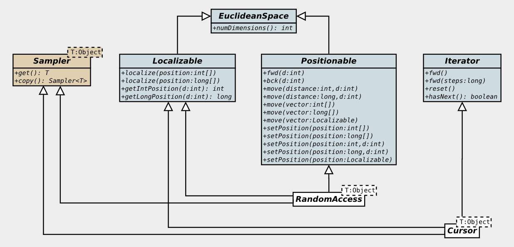
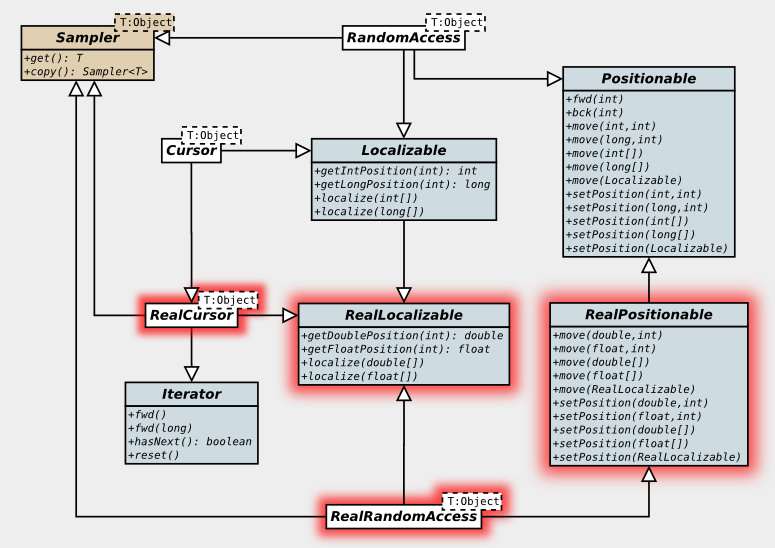
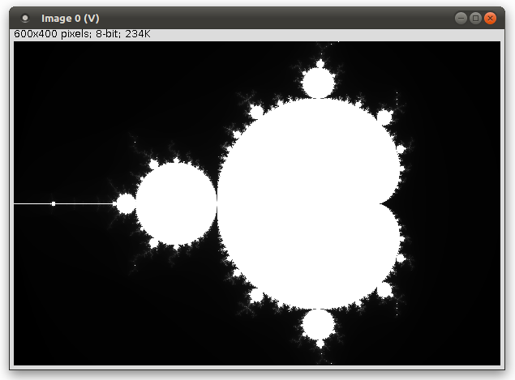
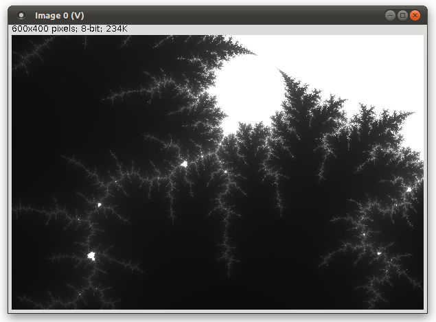

ImgLib2 - Accessors
Introduction
In ImgLib2, images are manipulated using Accessors. For pixel images, you can think of an accessor as a movable reference to a pixel.
- You can move it around the image (for example make it reference a pixel at specific coordinates).
- You can de-reference it to get the pixel value.
- And of course, you can ask its current position.
The accessors provided by ImgLib2 typically implement Cursor or RandomAccess. Cursor and RandomAccess are aggregations of interfaces covering the above three points. A simplified UML diagram for the interface hierarchy is shown below. (The simplification is with respect to real-coordinate interfaces for continuous images that are left out for now.)

ImgLib2 supports two basic access patterns:
- RandomAccess provides n-dimensional random access through the Positionable interface. It can be positioned at arbitrary integer coordinates.
- Cursor provides iteration through the Iterator interface. It can be moved forward to visit all pixels of the image once.
Both, RandomAccess and Cursor implement the Sampler interface which allows to access pixel values. Both implement the Localizable interface which allows to retrieve the accessors current pixel coordinates. Both inherit (through Localizable) the EuclideanSpace interval which allows to get the number of dimensions of the image.
Note, that Sampler, RandomAccess, and Cursor have a type paramer <T> that refers to the value type of the underlying image.
RandomAccess
RandomAccess provides n-dimensional random access through the Positionable interface. It can be used to access pixels at arbitrary integer coordinates. The following code uses a RandomAccess to draw some white pixels into an image.
import java.util.Random;
import net.imglib2.RandomAccess;
import net.imglib2.img.Img;
import net.imglib2.img.array.ArrayImgFactory;
import net.imglib2.img.display.imagej.ImageJFunctions;
import net.imglib2.type.numeric.integer.UnsignedByteType;
public class DrawWhitePixels
{
public static void main( final String[] args )
{
final int[] dimensions = new int[] { 400, 320 };
final Img< UnsignedByteType > img = new ArrayImgFactory< UnsignedByteType >()
.create( dimensions, new UnsignedByteType() );
final RandomAccess< UnsignedByteType > r = img.randomAccess();
final Random random = new Random();
for ( int i = 0; i < 1000; ++i )
{
final int x = ( int ) ( random.nextFloat() * img.max( 0 ) );
final int y = ( int ) ( random.nextFloat() * img.max( 1 ) );
r.setPosition( x, 0 );
r.setPosition( y, 1 );
final UnsignedByteType t = r.get();
t.set( 255 );
}
ImageJFunctions.show( img );
}
}In lines 013-015 we create a 8-bit gray-level image, in line 029 we show the result (like in the previous example).
In line 017 we create a RandomAccess to the image. Img implements the RandomAccessible interface, thus we can use randomAccess() to obtain one. The RandomAccess has the same generic type, UnsignedByteType, as the image.
final RandomAccess< UnsignedByteType > r = img.randomAccess();In the for loop (lines 019-027) we set 1000 random pixels to the value 255 (white). First we obtain the x, y coordinates of a random pixel within the image boundaries.
final int x = ( int ) ( random.nextFloat() * img.max( 0 ) );
final int y = ( int ) ( random.nextFloat() * img.max( 1 ) );Then we position the RandomAccess at those coordinates.
r.setPosition( x, 0 );
r.setPosition( y, 1 );The setPosition() method (from the Positionable interface) takes two parameters: the coordinate and the dimension. So we set the coordinate in dimension 0 to the value x, and we set the coordinate in dimension 1 to the value y.
After the RandomAccess has been positioned correctly, we can get() the pixel at that coordinate.
final UnsignedByteType t = r.get();We get an instance of the pixel value type UnsignedByteType that acts as a reference to the pixel. We set the pixel value via this reference
t.set( 255 );Notes
get()is defined in theSamplerinterface, so you can obtain pixel references from aCursorin exactly the same way.- Often, the
Tobtained fromSampler<T>.get()is a proxy object that is re-used internally. You should assume that moving the accessor invalidates the proxy. If you want to keep a permanent reference to a pixel, use theSampler<T>.copy()method. In the above example, this would return a copy of the RandomAccess refering to the same pixel. - The
Positionable,Localizable, … interfaces are not restricted to accessors. In fact, many ImgLib2 entities areLocalizable. For instance, the Point class implementsPositionableandLocalizable, and simply represents a n-dimensional coordinate. In your own code, whenever you have something that can provide coordinates, you should consider implementingLocalizable.
A Taste of Generic Algorithms
Before we move on to the “other” accessor, Cursor, let’s consider a generalization of the previous example. Let’s say we like setting random pixels, and because we plan to do this a lot in the future, we extract this functionality into a method.
Easy enough. But what if we want to apply the method to images of another value type, e.g. DoubleType or ARGBType? What if we want to apply it to a 3D image? ImgLib2 allows you to write code that handles of this transparently. In the following we write a function, that sets 1000 random pixels to “white”, no matter what.
Let’s take it step by step, starting from the original non-generic version. First, we extract a set-1000-pixels method for 2D Img<UnsignedByteType>.
public static void draw( final Img< UnsignedByteType > img )
{
final RandomAccess< UnsignedByteType > r = img.randomAccess();
final Random random = new Random();
for ( int i = 0; i < 1000; ++i )
{
final int x = ( int ) ( random.nextFloat() * img.max( 0 ) );
final int y = ( int ) ( random.nextFloat() * img.max( 1 ) );
r.setPosition( x, 0 );
r.setPosition( y, 1 );
final UnsignedByteType t = r.get();
t.set( 255 );
}
}We can add a generic parameter to the method handle arbitrary value types T. We want something like
public static < T > void draw( final Img< T > img )
{ ... }However, for a generic T, we no longer know what “white” is. 255 will certainly not do. So we need to pass the “white” value into the method.
public static < T > void draw( final Img< T > img, final T white )
{ ... }Furthermore, we need a way to set a pixel to this value. Note, that the Sampler.get() method provides a reference to the pixel. Changing that reference won’t do any good, and there is no Sampler.set() method! We need to ensure that we can use the reference to change the pixel value.
At the root of the ImgLib2 type hierarchy lies Type. A type T extending Type<T> must have a set( T ) method, which is exactly what we need. So we make our method only accept those T’s.
public static < T extends Type< T > > void draw( final Img< T > img, final T white )
{ ... }Replacing the UnsignedByteType with the generic T, and using white instead of 255, we obtain a more general version of draw().
public class DrawWhitePixelsGeneric
{
public static < T extends Type< T > > void draw( final Img< T > img, final T white )
{
final RandomAccess< T > r = img.randomAccess();
final Random random = new Random();
for ( int i = 0; i < 1000; ++i )
{
final int x = ( int ) ( random.nextFloat() * img.max( 0 ) );
final int y = ( int ) ( random.nextFloat() * img.max( 1 ) );
r.setPosition( x, 0 );
r.setPosition( y, 1 );
final T t = r.get();
t.set( white );
}
}
public static void main( final String[] args )
{
final int[] dimensions = new int[] { 400, 320 };
final Img< UnsignedByteType > img = new ArrayImgFactory< UnsignedByteType >()
.create( dimensions, new UnsignedByteType() );
draw( img, new UnsignedByteType( 255 ) );
ImageJFunctions.show( img );
}
}Note, that we have to pass new UnsignedByteType( 255 ) when calling draw().
Next, lets think about dimensionality independence. Instead of setPosition() for just dimensions 0 and 1, we can do so for as many dimensions as the image happens to have. We get the number of dimensions using
final int n = img.numDimensions();(Img also extends EuclideanSpace).
We loop over all dimensions when setting the position of the RandomAccess:
for ( int d = 0; d < n; ++d )
{
final int x = ( int ) ( random.nextFloat() * img.max( d ) );
r.setPosition( x, d );
}Setting the position dimension-by-dimension may be inefficient, because the RandomAccess might need to modify internal state with each setPosition() call. Instead, we may pass a int[] or long[] array comprising the coordinates to set the position at once.
Now the method looks like this:
public static < T extends Type< T > > void draw( final Img< T > img, final T white )
{
final int n = img.numDimensions();
final long[] pos = new long[ n ];
final RandomAccess< T > r = img.randomAccess();
final Random random = new Random();
for ( int i = 0; i < 1000; ++i )
{
for ( int d = 0; d < n; ++d )
pos[ d ] = ( int ) ( random.nextFloat() * img.max( d ) );
r.setPosition( pos );
final T t = r.get();
t.set( white );
}
}Finally, there is no need to restrict ourselves to Img. After all, we do not need many of the features of Img. We need be able to get a RandomAccess, so we need RandomAccessible<T>. We need to be able to get the number of dimensions and the extent in every dimension, so we need Interval. These two are conveniently gathered in RandomAccessibleInterval<T>. So lets make that
public static < T extends Type< T > >
void draw( final RandomAccessibleInterval< T > img, final T white )
{ ... }Now we are able to apply draw() to many ImgLib2 constructs that are not pixel Imgs. For instance there are Views that employ on-the-fly coordinate transforms, sampled and interpolated data, etc.
However, with great power comes great responsibility… Taking a general Interval means that we no longer can assume that the interval starts at coordinates (0,0,…,0). Thus we need to make a final modification to correctly draw between min and max of the interval.
import java.util.Random;
import net.imglib2.RandomAccess;
import net.imglib2.RandomAccessibleInterval;
import net.imglib2.img.Img;
import net.imglib2.img.array.ArrayImgFactory;
import net.imglib2.img.display.imagej.ImageJFunctions;
import net.imglib2.type.Type;
import net.imglib2.type.numeric.ARGBType;
import net.imglib2.type.numeric.integer.IntType;
import net.imglib2.type.numeric.integer.UnsignedByteType;
public class DrawWhitePixelsGeneric
{
public static < T extends Type< T > >
void draw( final RandomAccessibleInterval< T > img, final T white )
{
final int n = img.numDimensions();
final long[] min = new long[ n ];
img.min( min );
final long[] scale = new long[ n ];
for ( int d = 0; d < n; ++d )
scale[ d ] = img.max( d ) - min[ d ];
final long[] pos = new long[ n ];
final RandomAccess< T > r = img.randomAccess();
final Random random = new Random();
for ( int i = 0; i < 1000; ++i )
{
for ( int d = 0; d < n; ++d )
pos[ d ] = min[ d ] + ( long ) ( random.nextFloat() * scale[ d ] );
r.setPosition( pos );
r.get().set( white );
}
}
public static void main( final String[] args )
{
final Img< ARGBType > img = new ArrayImgFactory< ARGBType >()
.create( new int[] {400, 320, 100}, new ARGBType() );
draw( img, new ARGBType( 0xffffffff ) );
ImageJFunctions.show( img );
}
}And we used it on a 3D ARGBType image (which means a color image with red/green/blue/alpha values). Ta daaaaaa…
Notes
- Besides
setPosition()in a single or all dimensions, you can also relatively move aRandomAccessin one or all dimensions, or move theRandomAccesspixel-wise in one dimension (Have a look at the Positionable API doc!) Which of those is most efficient depends on the situation. - There is a
setPosition()version which takes aLocalizable. Often a situation occurs where you want to position accessorato the same location as accessorb. In this situation you can avoid localizingbinto an array and using that array to set the position ofa. You can simplya.setPosition( b )becausebisLocalizable. - By image, we do not necessarily mean pixel image.
- we use the generic parameter
< T extends Type< T > >instead of< Type >throughout ImgLib2 since that allows us to be more type-safe. Imagine implementing anadd(a, b)method for a certain type: using the simpler generic parameter would not allow us to enforce both parameters to have the same subclass ofType! - we create as many variables as possible outside of the loop (in particular, objects) since creating objects costs a bit of execution time and can easily dominate the performance of the algorithm if one is not careful about it.
Cursor
A Cursor can be used to visit all pixels of an image once. However, the Cursor concept is not limited to pixel images. A Cursor can be used to iterate every collection of Localizable samples.
Cursor provides iteration through the net.imglib2.Iterator interface. Iterator.fwd() advances the cursor. Iterator.hasNext() returns true if the cursor can be advanced further. Initially, a Cursor points before the first element. You have to call fwd() once to move to the first element.
Note, that the ImgLib2 net.imglib2.Iterator interface is different from Java’s java.util.Iterator. However, for convenience, Cursor implements java.util.Iterator as well.
Just like RandomAccess, Cursor extends Sampler, so you can get() the value of the current pixel (respectively sample). It also implements Localizable, so you can query the coordinates of the current sample.
Let’s look at an example: We load an image and find the maximum value (the intensity of the brightest pixel).
import net.imglib2.Cursor;
import net.imglib2.img.Img;
import net.imglib2.img.array.ArrayImgFactory;
import net.imglib2.io.ImgIOException;
import net.imglib2.io.ImgOpener;
import net.imglib2.type.numeric.integer.UnsignedByteType;
public class FindMaximumValue
{
public static void main( final String[] args ) throws ImgIOException
{
final Img< UnsignedByteType > img = new ImgOpener().openImg( "graffiti.tif",
new ArrayImgFactory< UnsignedByteType >(), new UnsignedByteType() );
final Cursor< UnsignedByteType > cursor = img.cursor();
int max = 0;
while ( cursor.hasNext() )
{
cursor.fwd();
final UnsignedByteType t = cursor.get();
max = Math.max( t.get(), max );
}
System.out.println( "max = " + max );
}
}In line 014 we get a Cursor from the image. In lines 016-021 we iterate the image using hasNext() and fwd(). In line 019 we get() the value at the current position. Again, this is an instance of the pixel value type UnsignedByteType that acts as a reference to the pixel.
Cursor implements java.util.Iterator which has the next() method. This is a combination of fwd() and get(). Instead of
cursor.fwd();
final UnsignedByteType t = cursor.get();we could write
final UnsignedByteType t = cursor.next();For even more syntactic sugar, every IterableInterval (such as Img) implements java.lang.Iterable. This allows to use the Java for-each loop and replace the lengthy while loop like so:
for( UnsignedByteType t : img )
max = Math.max( t.get(), max );However, note that in this construct the Cursor is hidden and you can not use it to get the current location. Therefore, you will often use the while form.
Let’s extend the previous example. Now we are also interested in the coordinates of the maximum. Cursor extends the Localizable interface which provides methods to get the current location either dimension-by-dimension or all at once. (Have a look at the Localizable API doc!)
import net.imglib2.Cursor;
import net.imglib2.img.Img;
import net.imglib2.img.array.ArrayImgFactory;
import net.imglib2.io.ImgIOException;
import net.imglib2.io.ImgOpener;
import net.imglib2.type.numeric.integer.UnsignedByteType;
public class FindMaximumValueAndLocation
{
public static void main( final String[] args ) throws ImgIOException
{
final Img< UnsignedByteType > img = new ImgOpener().openImg( "graffiti.tif",
new ArrayImgFactory< UnsignedByteType >(), new UnsignedByteType() );
final Cursor< UnsignedByteType > cursor = img.cursor();
int max = 0;
final long[] pos = new long[2];
while ( cursor.hasNext() )
{
cursor.fwd();
final UnsignedByteType t = cursor.get();
if ( t.get() > max )
{
max = t.get();
cursor.localize( pos );
}
}
System.out.println( "max = " + max );
System.out.println( "found at ( " + pos[0] + ", " + pos[1] + ")" );
}
}In line 016 we create a long[] position field which is updated (024) everytime a better max value is found. Here, we use a 2D position field, because we know, that the position is 2D.
Generic version
Let’s look at a generic version of the maximum-finding example.
import net.imglib2.Cursor;
import net.imglib2.IterableInterval;
import net.imglib2.img.Img;
import net.imglib2.img.array.ArrayImgFactory;
import net.imglib2.io.ImgIOException;
import net.imglib2.io.ImgOpener;
import net.imglib2.type.Type;
import net.imglib2.type.numeric.integer.UnsignedByteType;
public class FindMaximumValueAndLocationGeneric
{
public static < T extends Comparable< T > >
Cursor< T > findmax( final IterableInterval< T > iterable )
{
final Cursor< T > cursor = iterable.cursor();
cursor.fwd();
Cursor< T > max = cursor.copyCursor();
while ( cursor.hasNext() )
if ( cursor.next().compareTo( max.get() ) > 0 )
max = cursor.copyCursor();
return max;
}
public static void main( final String[] args ) throws ImgIOException
{
final Img< UnsignedByteType > img = new ImgOpener().openImg( "graffiti.tif",
new ArrayImgFactory< UnsignedByteType >(), new UnsignedByteType() );
final Cursor< UnsignedByteType > max = findmax( img );
System.out.println( "max = " + max.get().get() );
System.out.println( "found at ( " + max.getLongPosition( 0 ) + ", " +
max.getLongPosition( 1 ) + ")" );
}
}We define the method findmax as
public static < T extends Comparable< T > >
Cursor< T > findmax( final IterableInterval< T > iterable )First, note that we do not take an Img<T> as the parameter, because that would be too restrictive. All we need is something that is iterable. Because we can easily put interval bounds on every iterable set of Localizables, ImgLib2 does not define an Iterable super-interface for IterableInterval. So IterableInterval
For finding the maximum, the only restriction we have to put on type T is that it is comparable.
The return value of findmax is a Cursor<T>. Instead of creating a new class that represents a tuple of maximum value and coordinates, we simply return a Cursor positioned at the maximum.
To remember the maximum, we simply take a new copy of the iterating cursor whenever a better max value is found.
if ( cursor.next().compareTo( max.get() ) > 0 )
max = cursor.copyCursor();Remember that next() is equivalent to fwd() followed by get(). So, cursor.next() returns the current T.
Lines 028-031 show how to use findmax and get the maximum value and coordinates from the resulting Cursor. For a change, we used the dimension-by-dimension getLongPosition() of the Localizable interface.
Notes
- The iteration order is subject to implementation, specialized for each memory layout to minimize access time. For example, an ArrayImg has a different iteration order from a CellImg. This is nicely illustrated in ImgLib2 Example 2b - Duplicating an Img using a different ImgFactory.
- Typically, there are two variants of Cursors available. One that calculates its location per each iteration and one that calculates it only per localization request. The former is more efficient when localization occurs frequently, the latter otherwise. In the maximum-finding example, we use the latter because localization is only required once after the maximum has been found. The former one could be obtained using
localizingCursor()instead ofcursor()(see IterableInterval API doc.) copyCursor()is a work-around to circumvent a javac bug with covariant return type overriding (see bug report). In the future (with JDK7) everySamplercan be copied usingcopy()instead of having specialisedcopyCursor(),copyRandomAccess(), … methods.
Accessors for Continuous Coordinates
ImgLib2 is not restricted to rasterized images and integer coordinates It also supports continuous images and real-valued coordinates. Examples where this is appropriate are
- an interpolated image, where an interpolated value can be obtained at any real coordinate. Note that this is a bounded, but continuous image. Thus it is not iterable.
- a procedurally generated image, where a value can be computed at any real coordinate (continuous, unbounded, non-iterable).
- collections of samples taken at arbitrary real coordinates (discrete, bounded, iterable).
The following image shows the UML diagram for the ImgLib2 accessor interface hierarchy. The real-coordinate counterparts that were missing in the simplified version above are highlighted.

Real equivalents of the Positionable and Localizable interfaces have been added by which real-valued coordinates can be accessed.
Something that is RealPositionable can be positioned at real coordinates. There are methods to set absolute or relative position, for a single or all dimensions, in analogy to the integer Positionable. You can also set a RealPositionable to the location of a RealLocalizable. Note that RealPositionable extends Positionable, which is quite natural: Whenever something can be positioned at arbitrary real coordinates, of course it can be positioned to integer coordinates as well.
RealLocalizable allows to get a real coordinate from an accessor. Again, this is completely analogous to the integer Localizable. In this case, the inheritance relationship is the other way around - Localizable extends RealLocalizable. Something that is able to provide its integer coordinates is always able to provide them as real coordinates too.
In Combination with Sampler, we obtain random-access and iteration accessor interfaces. RealRandomAccess provides n-dimensional random access through the RealPositionable interface. RealCursor provides iteration through the Iterator interface.
Both, RealRandomAccess and RealCursor are RealLocalizable. Note that the inheritance relationship of Localizable and RealLocalizable propagates to the cursors. Every Cursor is also a RealCursor (because it can provide its current integer coordinates as real coordinates as well). There is no such relationship between RandomAccess and RealRandomAccess.
A RealRandomAccess to Render Mandelbrot Fractals
Let’s look at an example. The following code defines a RealRandomAccess which computes the Mandelbrot set{% include wikipedia title=‘Mandelbrot set’ text=‘Mandelbrot set’%}. More precisely, our RealRandomAccess can be positioned at an arbitray 2D coordinate in the complex plane. When we get() its value, it computes an iteration count for its current position using an Mandelbrot set#Escape_time_algorithm {% include wikipedia title=‘Mandelbrot set#Escape_time_algorithm’ text=‘Escape time algorithm’%}
import net.imglib2.RealPoint;
import net.imglib2.RealRandomAccess;
import net.imglib2.type.numeric.integer.UnsignedByteType;
public class MandelbrotRealRandomAccess extends RealPoint
implements RealRandomAccess< UnsignedByteType >
{
final UnsignedByteType t;
public MandelbrotRealRandomAccess()
{
super( 2 ); // number of dimensions is 2
t = new UnsignedByteType();
}
public static final int mandelbrot( final double re0, final double im0,
final int maxIterations )
{
double re = re0;
double im = im0;
int i = 0;
for ( ; i < maxIterations; ++i )
{
final double squre = re * re;
final double squim = im * im;
if ( squre + squim > 4 )
break;
im = 2 * re * im + im0;
re = squre - squim + re0;
}
return i;
}
@Override
public UnsignedByteType get()
{
t.set( mandelbrot( position[ 0 ], position[ 1 ], 255 ) );
return t;
}
@Override
public MandelbrotRealRandomAccess copyRealRandomAccess()
{
return copy();
}
@Override
public MandelbrotRealRandomAccess copy()
{
final MandelbrotRealRandomAccess a = new MandelbrotRealRandomAccess();
a.setPosition( this );
return a;
}
}First of all, note that we extend RealPoint. Instead of implementing the interface RealRandomAccess< UnsignedByteType >, we make use of this classawhich has most of the required methods implemented already.
Actually, all we are left with is to implement the Sampler< UnsignedByteType > interface. ImgLib2 provides several such abstract implementations to minimize development time for new accessor types. The UML diagram below shows MandelbrotRealRandomAccess and the derivative hierarchy of its parent classes.
The value (iteration count) at a 2D position (re0,im0) is computer in the static method mandelbrot() in lines 016-032. When calling it, we set the maximum number of iterations to 255. Thus we can use UnsignedByteType as the value type of our accessor. Therefore, we implement the interface RealRandomAccess< UnsignedByteType >.
In the constructor in lines 010-014, we call the super class constructor to initialise a 2-dimensional RealPoint. We create the UnsignedByteType member t (declared in line 008) which will store the value that is returned by get().
Our super class RealPoint implements the RealPositionable and RealLocalizable. We have access to the current position through the double[] position field inherited from RealLocalizable. In get() (lines 035-038) we use it to compute the value at the current position. The value is stored in t which is returned.
Finally, we provide the copy() and copyRealRandomAccess() methods to complete the RealRandomAccess interface implementation. A copied accessor is supposed to refer to the same position and value, therefore we setPosition in line 051.

Now let’s use the MandelbrotRealRandomAccess to render a pixel image:
import net.imglib2.Cursor;
import net.imglib2.RealLocalizable;
import net.imglib2.RealRandomAccess;
import net.imglib2.img.Img;
import net.imglib2.img.array.ArrayImgFactory;
import net.imglib2.img.display.imagej.ImageJFunctions;
import net.imglib2.type.numeric.integer.UnsignedByteType;
public class DrawMandelbrot
{
public static void main( final String[] args )
{
final int[] dimensions = new int[] { 600, 400 };
final Img< UnsignedByteType > img = new ArrayImgFactory< UnsignedByteType >()
.create( dimensions, new UnsignedByteType() );
final RealRandomAccess<UnsignedByteType> mb = new MandelbrotRealRandomAccess();
final double scale = 0.005;
final double[] offset = new double[] { -2, -1 };
final Cursor< UnsignedByteType > cursor = img.localizingCursor();
while( cursor.hasNext() )
{
cursor.fwd();
for ( int d = 0; d < 2; ++d )
mb.setPosition( scale * cursor.getIntPosition( d ) + offset[ d ], d );
cursor.get().set( mb.get() );
}
ImageJFunctions.show( img );
}
}We start by creating a 600×400 UnsignedByteType pixel image (lines 013-015). This is the target image into which we will render the mandelbrot fractal and which we will eventually display on screen (line 031).
We create a MandelbrotRealRandomAccess which will provide samples from the fractal at arbitray positions.
final RealRandomAccess< UnsignedByteType > mb = new MandelbrotRealRandomAccess();We render the fractal by iterating and setting the pixels of the target image (lines 022-029). In this case, we use a localizing Cursor because we need the cursor’s position at every pixel.
final Cursor< UnsignedByteType > cursor = img.localizingCursor();The current coordinates of the cursor are transferred to the RealRandomAccess using a scale factor and an offset. (Scale and offset are defined in lines 019-020.) We set the coordinates dimension-by-dimension:
for ( int d = 0; d < 2; ++d )
mb.setPosition( scale * cursor.getIntPosition( d ) + offset[ d ], d );Finally, we get a reference to the current pixel, and set it to the value computed by the MandelbrotRealRandomAccess.
cursor.get().set( mb.get() );cursor.get() gives the UnsignedByteType reference to the value under the cursor. mb.get() gives the UnsignedByteType reference to the value computed by the MandelbrotRealRandomAccess. Then we set() the value of the former to the value of the latter.
When you run the code you will see this: 
Because we have a RealRandomAccess you can zoom in indefinitely (until you hit the double precision limit). If you like, you can play around with the scale and offset values. Here is another example obtained with
final double scale = 0.000125;
final double[] offset = new double[] { -1.3875, 0.045 };
Notes
- In line 017 we used a
RealRandomAccess< UnsignedByteType >variable just to emphasize again the interface implemented byMandelbrotRealRandomAccess. In real code, you would probably use the actual type. - Sampling from a transformed
RealRandomAccessto create a pixel image is a quite common task. ImgLib2 provides a framework for on-the-fly transformations, which will be explained later. - The
RealPositionable,RealLocalizable, … interfaces are not restricted to accessors. For example, the RealPoint class implementsRealPositionableandRealLocalizable, and simply represents a n-dimensional coordinate.